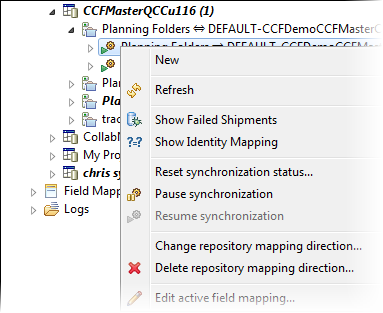

By default, synchronization is paused while you set up repository mappings. You need to explicitly resume synchronization in order to start shipping artifacts.
There are options to resume, pause and reset synchronization:

-
To start synchronization, right-click the repository mapping or repository mapping direction and select Resume synchronization.
You should see the icon change to green:
-
To pause synchronization, right-click the repository mapping or repository mapping direction and select Pause Synchronization.
Let's say you've identified a problem with mapping the data or repository layouts (for example, a missing field) and don't want artifact changes transported until you've fixing things. In this situation, you should pause synchronization, fix the problem, and then resume synchronization.
-
Note: Use the option to reset the synchronization status only under very specific situations -- see the examples below.
To reset synchronization status, right-click the repository mapping direction and select Reset synchronization status.
- Let's say you performed a mass update on a large number of TeamForge artifacts and encounter an Out of Memory exception because the connector was not configured for sufficient heap space. To get past this problem,
one solution is to transfer smaller subsets of artifacts utilizing synchronization status resets and selective mass updates. For details, see
this wiki page.
- When you're moving your production instance of the TeamForge connector to a different machine and need to reset the last synchronization timestamps, you will need to reset the synchronization status. For details, see this page.